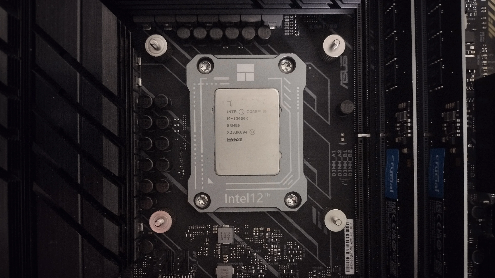
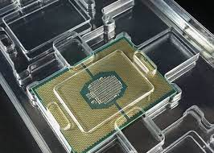

CPU Frames and Components
The central processing unit (CPU) is a complex electronic device consisting of various physical frames or components that work together to perform the various functions required for executing instructions and processing data. These components are typically integrated onto a single integrated circuit (IC) chip, known as a microprocessor.
CPU Frames and Components
The main physical frames or components that make up a CPU include:
- Arithmetic Logic Unit (ALU): The ALU is responsible for performing arithmetic and logical operations, such as addition, subtraction, multiplication, division, and bitwise operations.
- Control Unit (CU): The control unit manages the flow of instructions and data within the CPU. It fetches instructions from memory, decodes them, and generates the necessary control signals to coordinate the various components of the CPU.
- Registers: Registers are small, high-speed storage areas within the CPU used for temporarily holding data, addresses, and instructions during the execution of programs.
- Cache Memory: Cache memory is a small, fast storage area that acts as a buffer between the CPU and the main memory (RAM). It stores frequently accessed data and instructions for faster retrieval, improving overall system performance.
- Instruction Decoder: The instruction decoder is responsible for analyzing the instructions fetched from memory and determining the appropriate operations to be performed by the CPU components.
- Bus Interface Unit (BIU): The BIU manages the communication between the CPU and the external components, such as memory and input/output devices, through various buses (e.g., address bus, data bus, control bus).

CPU Packaging
The various components of the CPU are typically integrated onto a single microchip, known as a microprocessor or CPU die. This chip is then enclosed in a protective package, which provides physical protection and facilitates electrical connections with other components in the computer system.
Common CPU packaging types include:
- Pin Grid Array (PGA): A PGA package has pins arranged in a grid pattern on the bottom surface of the package, which are used to make electrical connections with the motherboard or CPU socket.
- Ball Grid Array (BGA): A BGA package has a grid of solder balls on the bottom surface of the package, which are used to make electrical connections with the motherboard or CPU socket.
- Chip Carriers: Chip carriers are ceramic or plastic packages that provide a protective enclosure for the CPU die and facilitate electrical connections with the motherboard or CPU socket.

Importance of CPU Components and Packaging
Understanding the various physical frames or components that make up the CPU and their respective functions is essential for computer architecture design and optimization. The arrangement, integration, and interconnection of these components play a crucial role in determining the overall performance, power efficiency, and reliability of the CPU.
Additionally, the packaging of the CPU is critical for ensuring proper electrical connectivity, thermal management, and physical protection of the delicate microchip. Advances in CPU packaging technologies, such as smaller form factors, improved thermal dissipation, and higher pin densities, have enabled the development of more powerful and energy-efficient CPUs.